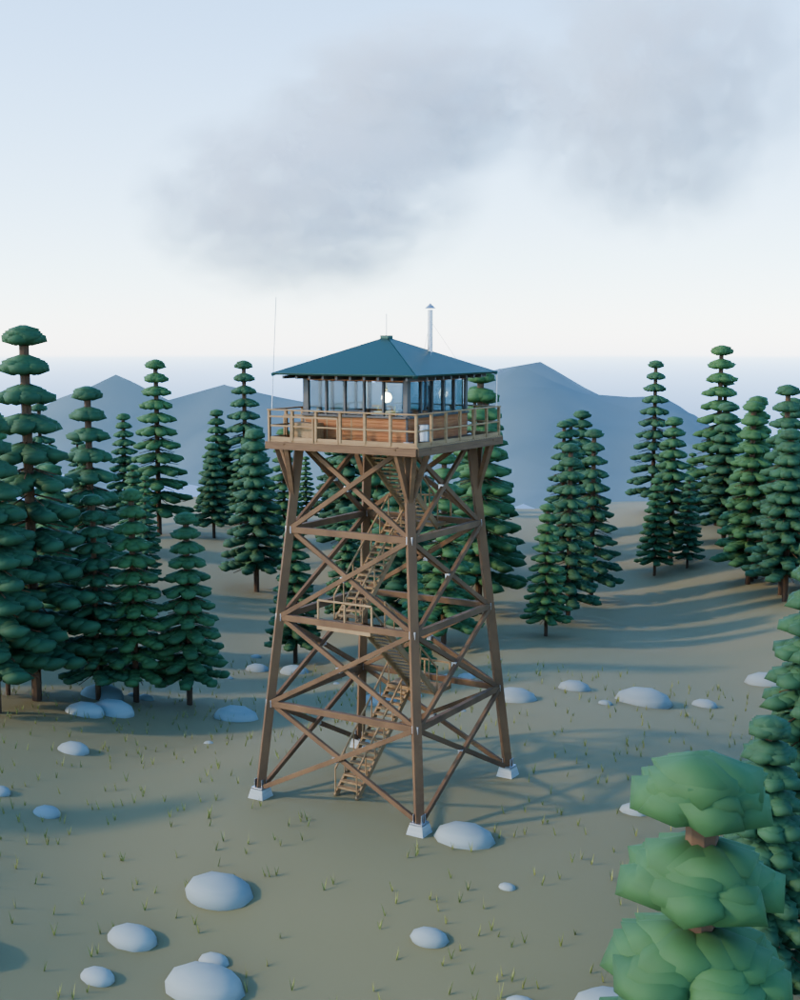
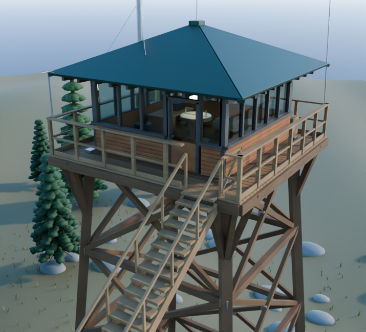

A proper way up
Four exterior stair flights lead to a gate on the catwalk. The final tread meets the deck, keeping the cabin floor open and the approach outside.

ABOVE THE EVERYDAY
A quiet lookout. A forest that stretches forever.
A world built one detail at a time.
Drag to orbit · Scroll to zoom
There’s something about a fire lookout. The timber, the narrow stairs, the windows looking out in every direction. A small room with a very big view.
This is a digital study of that feeling. A detailed lookout cabin sits above an alpine forest, complete with a wraparound catwalk, exterior switchback stairs, and the tools of a ranger’s day.
Made in Blender. Brought to the browser.Above the forest floor
A view in every direction
Flights to the lookout
Real geometry.
Room to explore.
Look closer. The lookout has
a story inside, too.

Four exterior stair flights lead to a gate on the catwalk. The final tread meets the deck, keeping the cabin floor open and the approach outside.
Timber frames, a deep green hip roof, and glass around the cabin. Inside: a firefinder, a radio, a ranger’s cot, and a wood stove.
Pine trees, granite outcrops, and rooted grass surround the tower. Layered mountain ridges carry the scene out to the horizon.
FROM THE WORKBENCH TO THE WILDERNESS